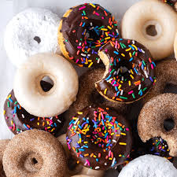
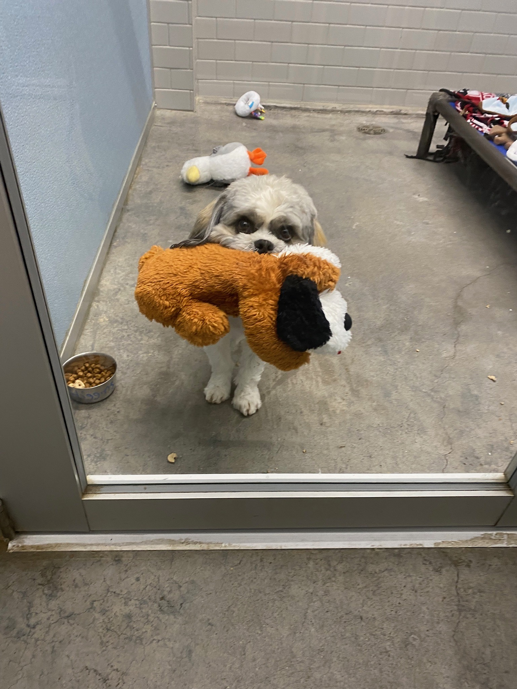
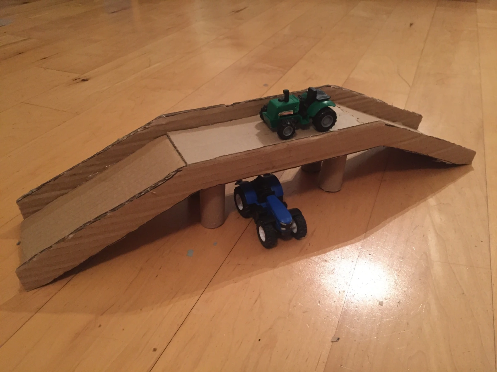
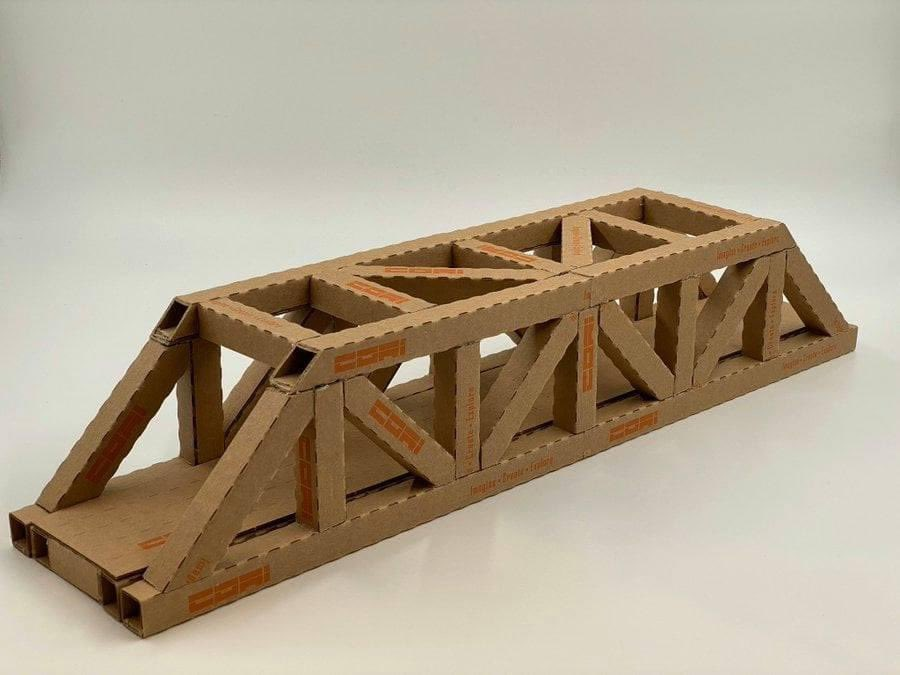
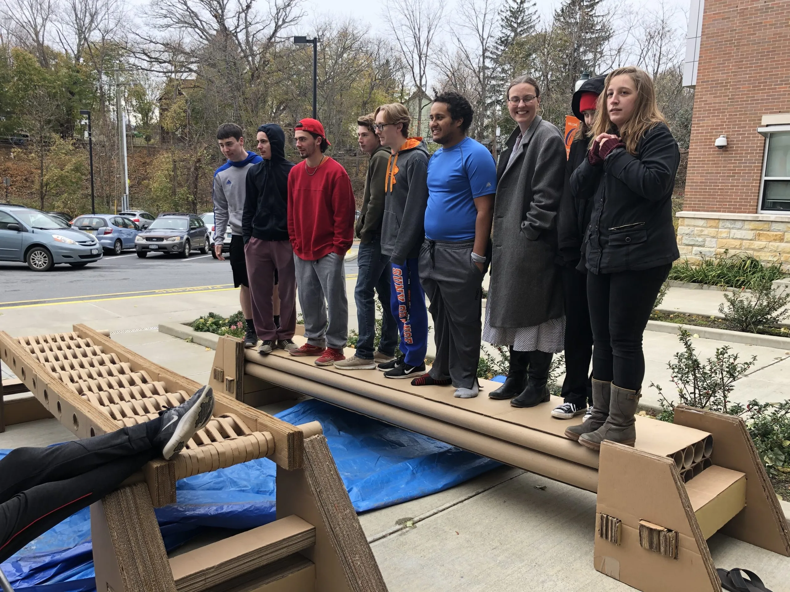
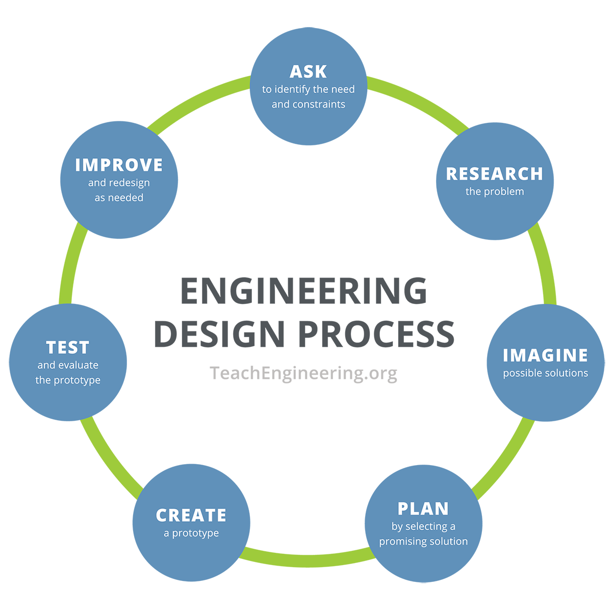

Engineering Concepts
Presented by Chris Wilbur
Draw This
- a rectangle with a red square in the middle
- put it in the bottom left of the page and make it purple
- add a yellow moon in the top right corner
Does your drawing look like this?
- a rectangle with a red square in the middle
- put it in the bottom left of the page and make it purple
- add a yellow moon in the top right corner
With Auto Animate
Draw This
- a gray cat with glasses
- with a laptop
- have it's right front paw pointing up to the sky
- with a twinkling lightbulb above it's head as if to say "Ah Ha!"
Does your drawing look like this?
- a cat with glasses
- with a laptop
- have it's right front paw pointing up to the sky
- with a twinkling lightbulb above it's head as if to say "Ah Ha!"
Draw This
- A big mean duck
- with the word "Pathetic" floating above it's head
- and make it look real judgmental
Does your drawing look like this?
- A big mean duck
- with the word "Pathetic" floating above it's head
- and make it look real judgmental
Group work: Customer + Artist
Pair up and take turns playing the customer and artist. The customer describes an image to the artist while the artist has to do their best to draw what is described (no peeking).
Discussion
- How difficult was it?
- What were some of the things we did to make it easier or harder?
- Can you think of anything that could make it easier?
...I want lunch.
Christie
...I want lunch.
Halle

...I want lunch.
Higgins

But who should I ask?
What if ...it was a bit harder?
What if...it was harder?

What if...it was harder?
What if...it was harder?

What if...it was harder?

What if...it was harder?
What if...it was harder?
Engineering
solve problems
and make things better
.Natural Sciences
The science of the physical world: chemistry, biology, physics.
Engineering
natural sciences
, mathematics
, and the Engineering Design Process
to solve problems and make things better.Natural Sciences
The science of the physical world: chemistry, biology, physics.
Natural Sciences
The science of the physical world: chemistry, biology, physics.
Mathematics
The abstract science of numbers, quantities, and space.
Engineering Design Process
A logical set of specific steps used to solve problems.
EDP

Engineering
Engineering
natural sciences
, mathematics, and the engineering design process to solve problems and make things better.Engineering
natural sciences
, mathematics
, and the engineering design process to solve problems and make things better.Engineering
natural sciences
, mathematics
, and the engineering design process
to solve problems and make things better.